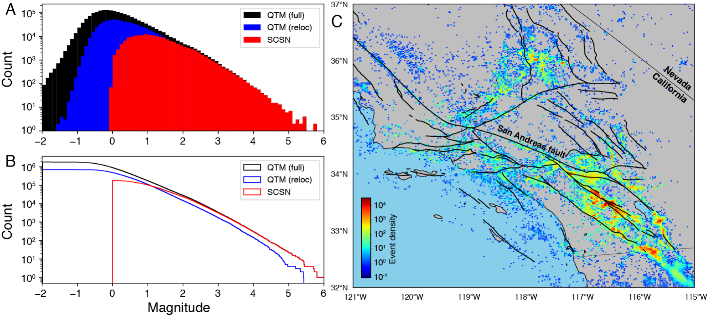
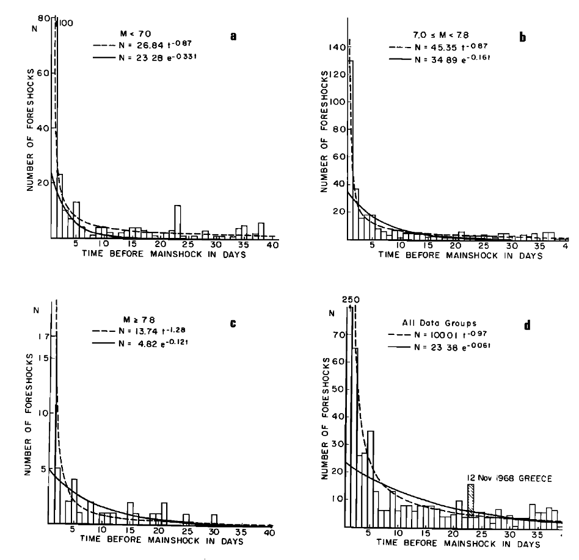
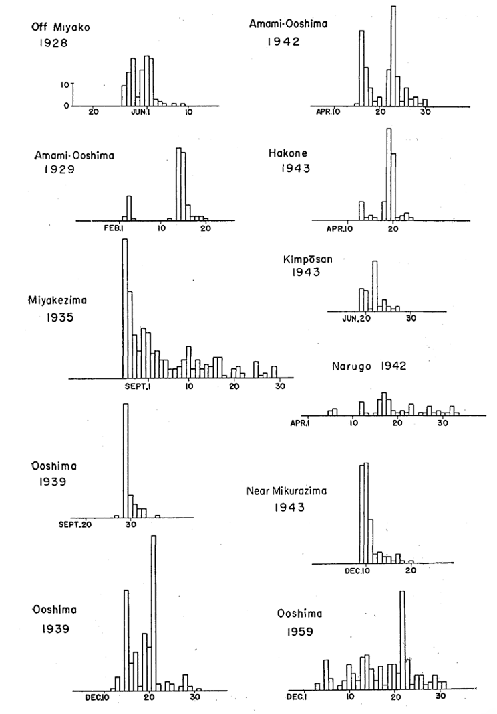

Earthquake Statistics
The Earthquake Cycle
- Elastic rebound

Spring-block model
When the force exerted by the spring exceeds the static friction \(\mu_s\), the block will slide until the dynamic friction \(\mu_d\) balances the reduced level of stress. If \(\mu_s\), \(\mu_d\), and \(v\) are all constant, then the earthquakes will repeat at regular recurrence intervals.

Earthquake recurrence model

Parkfield earthquake
Significant earthquakes at Parkfield, California, have repeated at fairly regular intervals since 1850, leading to predictions of another event before 1993. However the earthquake did not occur until 2004.

The block-slider model
A problem with the characteristic earthquake hypothesis is that it ignores the interactions with adjacent segments on the same fault, as well as interactions with other faults

Self-similar and fractial scaling relationship
- Power-law distribution of seismicity rates (the b-value relationship)
- Nearly constant value of stress drop over a wide range of earthquake sizes
- Fractal dimension D approximately twice the b-value (Turcotte, 1997)
Aftershocks
Earthquakes are thought to trigger aftershocks either from the dynamic effects of their radiated seismic waves or the resulting permanent static stress changes
-
The seismicity rate decays with time, following a power law relationship, called Omoris law after Omori (1894)
-
Coulomb failure function (CFF) \(\(CFF = |\tau_s| + \mu (\tau_n + P)\)\)
where \(\tau_s\) is the shear traction on the fault, \(\tau_n\) is the normal traction (positive for tension), \(P\) is the pore fluid pressure, and \(\mu\) is the coefficient of static friction.
Earthquake Source Parameters
- Magnitude
- Origin time
- Location
- Focal mechanism
- Stress drop
- Energy
- Frequency
- ...
Statistical relationship between source parameters
wiki - Gutenberg-Richter Law (1944) - Omori Law (1894) - Bth's Law (1965) - The Epidemic Type Aftershock Sequence (ETAS) model (1988) - ...
The Gutenberg-Richter Law
$$ N=10^{a-b M} $$ Where: - \(N\) is the number of events greater or equal to \(M\) - \(M\) is magnitude - \(a\) and \(b\) are constants
The Gutenberg-Richter Law
The Gutenberg-Richter Law

What controls the slop \(b\)?
Temporal variation of \(b\)

Temporal variation of \(b\)
The magnitude completeness (\(M_c\))
What affects the magnitude completeness?
- Station coverage
- Background noise
- Detection algorithms
- ...
Omori Law
$$ n(t) = \frac{K}{c+t} $$ The number of events \(n(t)\) in time \(t\) after the mainshock

A modified Omori Law
$$ n(t) = \frac{K}{(c+t)^p} $$ : productivity of aftershocks : decay rate c: delay time
The decay rate \(p\)
- \(p \sim 1.1\)
- valid for a long time range
- independent of magnitude
The aftershock productivity \(K\)
- Combined with the Gutenberg-Richter law
How about for foreshocks?
-
Inverse Omori law \(n(t) \propto t^p\)
-
but individual sequences rarely display this behavior

The Epidemic Type Aftershock Sequence (ETAS) model

The Epidemic Type Aftershock Sequence (ETAS) model
$$ % g\left(t-t_i, M ; \theta\right)=\frac{K \cdot \exp \left(\beta\left(M-M_c\right)\right)}{\left(t-t_i+c\right)^p} \lambda(t)=\mu+\sum_{t_i<t} K \cdot \exp \left(\beta\left(M_i-M_c\right)\right) \cdot\left(t-t_i+c\right)^{-p} $$ - \(\mu\) is the background rate - \(K\) is the productivity - \(M_c\) is the magnitude completeness - \(p\) is the decay rate - \(c\) is the delay time - \(\beta\) is the magnitude scaling - \(t_i\) is the occurrence times of previous earthquakes.
The ETAS model
- Modeling earthquake activity of a Poissonian background and a cluster process
- Analyzing background or clustered events
- Most widely used model for earthquake forecasting
Incorporate spatial triggering into ETAS
- \(q\): the spatial decay rate of intensity following an event
Physical models on aftershocks spatial distribution


Coulomb failure stress (CFS) (Static triggering)
$$ \Delta \sigma_f=\Delta \tau+\mu\left(\Delta \sigma_n+\Delta p\right) $$ \(\Delta \tau\) : change in shear stress \(\Delta \sigma_n\) : change in normal stress (positive for tension) \(\Delta p\) : change in pore pressure \(\mu\) : friction coefficient
Coulomb failure stress (CFS)
Dynamic triggering
Dynamic triggering

Earthquake swarms
[a sequence] where the number and the magnitude of earthquakes gradually increase with time, and then decreases after a certain period. There is no single predominant principal earthquake - Mogi (1963)

2012 Brawley,CA swarm


2016 Cahuilla,CA swarm

2018 Pahala,Hawaii swarm

2018 Pahala,Hawaii swarm


Spatial-temporal evolution patterns of swarms
-
Migration distance vs. time
- \(R \propto t^{\alpha}\), \(\alpha \sim 0.5, 1\)
- \(R \propto \log(t)\)
-
Migration speeds
- m/day to km/hour
-
Similarity to induced seismicity
Deep learning for earthquake statistics

Deep learning for earthquake statistics
Deep learning for earthquake statistics

Deep learning for earthquake statistics